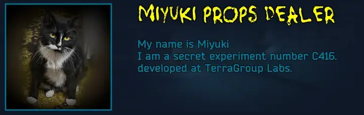
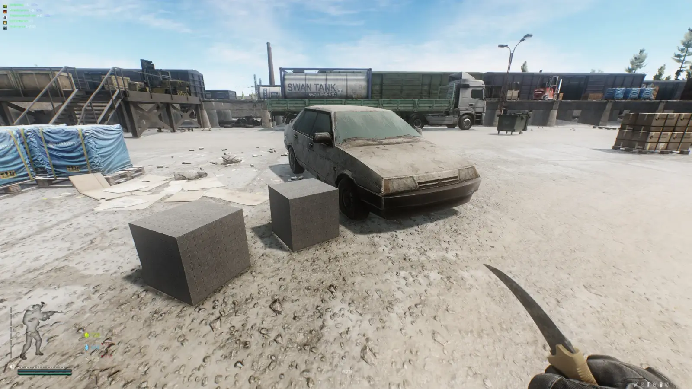
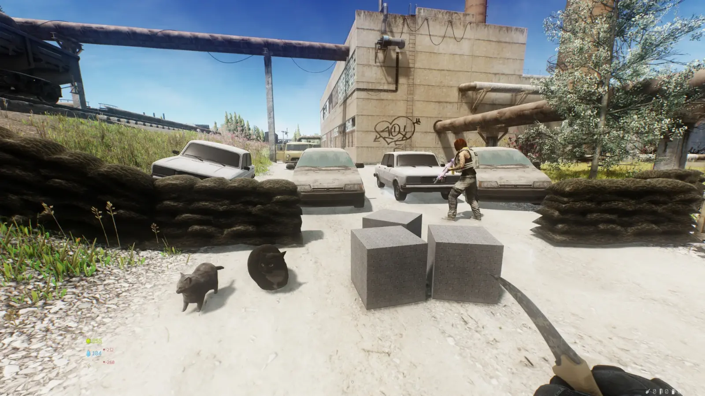

Miyuki Props Dealer
- Downloads
- 448
- Favourites
- 1
- Mod lists
- 4

character information
- I am a secret experiment number C416. developed at TerraGroup Labs.
- The essence of the experiment was to create intelligent beings who think no worse than humans.
- they took the genes of a cat and an accidental SCAV, and they created me.
- Something didn’t go according to plan, I turned out to be much smarter than they expected, and I ran away.
- Now I live in the customs area and sell junk that would be enough for food.
- I need people like you to rise from the bottom.
- I will give you various tasks and we can rise from the bottom together)
history information
- Chapter one: Acquaintance (16 Quests)
- Chapter two: A tense moment (soon)
- Chapter Three: Finding leads (soon)
- Chapter Four: Salvation Object M (soon)
- Chapter Five: Salvation Object O (soon)
- Chapter Six: Special assignment (soon)
- End Story: Tough choice (soon)
The choice will determine what the sequel will be

This mod adds different objects to the game, created for entertainment purposes. Suitable for those who want to shoot some videos as props. It also adds a merchant with his own story and quests.
in development: story, quests, object spawning on the map, new random items, and lore items.

My items have MPD prefixes for a quick search
- Polarius Cube
- VAZ 21099
- VAZ 2105
- barricades
- Maxwell the cat
- oiia cat
soon

-
download the latest release zip.
-
Extract the zip so that
Miyuki-props-dealerends up in:SPT/user/mods/Miyuki-props-dealer
VERY IMPORTANT! If you don’t have mods that give things physics, my props won’t save you from bullets and grenades! because the objects will be transparent!
You will also need a mod like (Loot In Vicinity) This will allow you to place items conveniently, just drag them to the drop window and the item will fall right under you.
if you are using (Visceral Combat) or any other mod with the PHYSICS of objects feature, please note that objects will fly away when a grenade explodes or a bullet hits them. In the vanilla version of the game, objects do not move when a bullet hits them because they are transparent. I plan to include this feature (object physics) in my mod, but it is not available yet. If you want realism in my props, you can find a mod that includes this feature.
The weight of objects is already adjusted to physics, which is why cars weigh so much, so they hardly move after a grenade explosion)
I would also like to draw your attention to the fact that the player can pass through my objects, as the loot in Tarkov is transparent to the player. Once I figure out a way to fix this, I will update the information.
I also ask you not to risk your gaming life by hiding behind my objects from grenades, they are able to protect well from shots and grenade fragments, but the shock wave of the grenade will kill you! However, if the grenade hits the prop, it will bounce off it)
I uploaded it here to get feedback, please write in the comments what items you would like to see in the game, and I will try to add them
My Mod add random props
The mod is in the development processmy first test mod for Tarkov, I’m training to create mods, I want to diversify the game with various objects, portable shelters, meme, fun, collection objects.
Version
2.0.2
- fix quest №7
- add Quest Assort - Items unlocked after quest completion
- add 8 Quest img
- add CustomQuestZones
- add 8 Quest
- translation into Russian and English all quest
I have finished the first chapter, but I do not know when the second will be released. If you like it, I will try to release it as soon as possible. The translation into English may not be accurate, but if someone is interested in translating this text from Russian into English, I would appreciate your help.
Dependencies
Version
2.0.1
- add CustomLocales RU/EN translate
- add test chatbot (not functional)
- add CustomQuests
- add 8 Miyuki Story Quest
- add Quests img
- remove insurance (not work, mb later)
- loyaltyLevels adapted for quests
what will happen in 2.0.2?
- translation into Russian and English all quest
- add +8 quest (first chapter will end)
- add CustomQuestsZone
- add new props
- add Quests img
I'm currently busy writing new quests based on Miyuki's story, but I'm also looking forward to hearing your suggestions for adding new items in the comments.
Unfortunately, I don't have much time due to my work, and I've completed 8 out of the 15 quests in the first chapter. Additionally, there is no English translation available, but I will include it in version 2.0.2
Dependencies
Version
2.0.0
2.0.0
- Clear cache in launcher.
- Delete old folder SPT/USER/MODS/ > SPT-NoTDifficult-Props <
- mod rename Miyuki props dealer
- create Miyuki story
- fix fatal error (if not install other WTTMOD)
- fix maxwell icon
- fix vaz 21099 icon
- fix vaz 2105 icon
- add traders Miyuki
- add loyality level 1-4
- add repair service -0.4% quality
- add all mpd mods items sale
- add insurance (mb not work test)
Dependencies
Version
1.0.1
1.0.1
- add barricades
- add vaz 2105
- rename cube > Polarius cube
- add ND prefixes (for a quick search)
- add maxwell the cat
- add oiia cat
Dependencies
Version
1.0.0
1.0.0
- add cube
- add vaz 21099